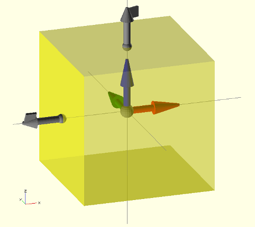
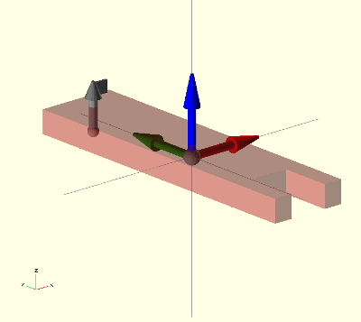
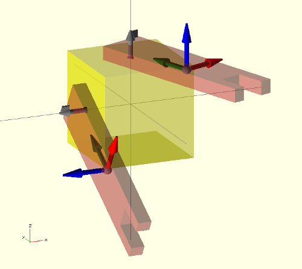
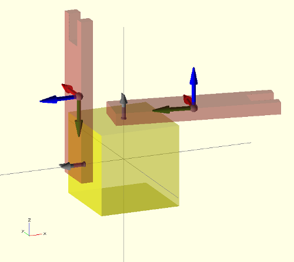

Looking into the future
OpenScad is one of those tools that opens your mind. It falls into the category of mechanical description languages. Instead of the typical Graphical User Interface (GUI) for designing parts, OpenScad generates the parts from the code typed by the user. This way, the mechanical parts are now pieces of code that can be easily documented, shared among users, uploaded into repositories and so forth.
One of the advantages of this approach is that the code can also be generated by other programs, opening the doors to future design tools that can create physical models from high level specifications. Imagine a software tool able to create robots from the user requests: “I want a mobile robot with tracks, a size lower that xxxx …”. The tool will be in charge of calculating everything and finally offering the user the prototypes that best fit its needs. These tools will also be able to use evolutionary algorithms to build optimized robots or parts.

For programming such tools, we need to combine the power of a standard programming language with the ability to create physical parts. That is one of the goal of the Object Oriented Mechanical Library (OOML): applying the object oriented paradigm for designing parts (in C++). It is a research project for developing new paradigm for designing mechanics.
Back to earth
In the meanwhile, OpenScad is a great tool (and very extended) for developing mechanical parts. There are thousands of designs at thingiverse (tagged with the word “openscad”). Although it is rather easy to design with it, sometimes understanding how others have implemented their parts is a complex task. Even if the code is made by yourself, after some time, it is rather complicated to understand it. There are plenty of translate, rotate and other operators nested in deep blocks of code. Many times is easier to start from scratch than to re-use some code made by others.

In order to make the code more readable and reusable, I am working on small tools for enhancing openscad designs. One of them is the vector library. Now I cannot live without it 🙂 The new tool I am presenting here is the attach library.
Attaching parts
When designing is rather common to design separated sub-parts as modules that are connected together later. In complex multipart-objects, such as robots, it is also useful to connect all the parts to see how the final design looks.
It is not difficult to do such operations in openscad by means of the translate and rotate operators… but it generates a very difficult to understand code. Here comes the attach operator in our help.
Connectors
In order to write re-usable and understandable code, we have to separated the part data from the code. The first give us the information of the part: size, drills … The second tell us how the object is built from the data (algorithms or approaches). One can choose different algorithms or approaches for building the object from the same data. Separating the data from code makes it possible for others to re-implement the algorithms, therefore improving the parts.
One way of achieving it (for attaching parts) is using connectors, defined as a list of 3 elements: the attachment point, the attachment axis and the roll angle.
Example: defining and using connectors

Let's work on a simple example. Imagine we have a main part in which we want to connect more parts.
For simplification, let's assume the main part is a cube. The first thing to do is to define the connectors. We want to have one on the top and another on the left. Given the cube size by:

size = [20,20,20];
the two connectors can be declared like this:
//-- att. point att. axis roll
c1 = [ [0,0,size[2]/2], [0,0,1], 20 ]; //-- Top
c2 = [ [-size[0]/2,0,0], [-1,0,0], -30 ]; //-- Left
ummm… not very clear up to now… But here comes the connector() module in our help: we can see the cube with its connectors on the screen very easily (See the above image):
connector(c1); //-- Con. 1
connector(c2); //-- Con. 2
frame(l=8); //-- See the frame of reference
//-- Draw the Main part (transparent)
color("Yellow",0.5)
cube(size,center=true);
Now we can see the main part (a transparent cube) along with its frame of reference (module frame()) and the two connectors in gray. The graphical connectors represent their three components with different objects: a sphere on the base for the attachment point, a vector for the attachment axis, and a square mark on the vector head for the rolling angle.


Let's build the part we want to attach to the main body. We write it like a module, so that the part can be re-used. Again, it is a simplified part, just to show you a simple example. First the part data: size and one connector:
asize = [10,40,3];
//-- Connector
a = [ [0, asize[1]/2-3,-asize[2]/2], [0,0,1], 0];
the module:
module arm(debug=false)
{
//– Debug mode: show the connector and frame of ref
if (debug) {
frame(l=10);
connector(a);
}
color(“Brown”,0.5)
difference() {
cube(asize,center=true);
translate([0, -asize[1]/2,0])
cube([asize[0]/2, asize[1]/3, asize[2]+1],center=true);
}
}
Notice that the module has a debug flag, so that when activated the frame of reference and connector are shown:
arm(debug=true);
One, two, three…Attach!


attach(c1,a) arm(debug=true);
attach(c2,a) arm(debug=true);
The meaning of the first sentence is pretty clear: Attach the connector a of the arm part to the connector c1 of the main part.
The arm parts are rotated a “roll” angle when attaching. This was the third parameter of the connector. Just changing it, the arms will point to a different place:
//-- att. point att. axis roll
c1 = [ [0,0,size[2]/2], [0,0,1], 80 ];
c2 = [ [-size[0]/2,0,0], [-1,0,0], 90 ];


Imagine that a user wants to attach a different part. It is straightforward now to understand the code… just change the arm module by the new part:
attach(c1,b) new_part();
where b is the connector of the new part.
Limitations

That is how the part looks once you turn off the debug flag.
The attach operator seems to be very powerful and useful.. and it is.. but with limitations. Unfortunately Openscad does not allow defining recursive modules (At least with the 2012-02-22 release).. so when you try to use it on a module that already uses the attach operator…. you will get a warning and your part will not be made…
but …hey! It is opensource software! Yes! it is! So, if the attach operator is useful and the community start using it, it can be implemented natively as an openscad operator… or it can be implemented in higher level mechanical description languages, like ooml (which already include it).
Happy mechanics geeking!